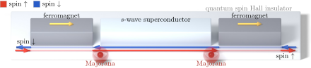

Advanced Quantum Materials 2027 · All lectures · Lecture notes
Session 5. Superconductivity, Nambu Representation and Majorana Physics
5.18 Engineering a topological superconductor from a quantum spin Hall insulator
Chiral and p-wave superconductors of the kind we need are rare in nature, so in practice they are usually engineered and not found. One instructive recipe uses directly the quantum spin Hall (QSH) insulator from the topological-band-structure session. We take a QSH insulator, and the concrete material used in the lecture is tungsten ditelluride (WTe\(_2\)), whose edge has helical modes, meaning that spin-up electrons propagate in one direction and spin-down electrons propagate in the other direction on the same edge. Now we place ordinary ferromagnets on two segments of this edge. A magnet breaks time-reversal symmetry locally, and this opens a gap in the helical edge modes below it. We recall from the topological-band-structure session that the protection of the QSH edge relies on time-reversal symmetry through Kramers degeneracy, so if we break this symmetry locally, the protection is lost there. What remains without a gap is a short isolated segment of helical edge between the two magnetic regions.
This isolated segment only has spin-up electrons moving right and spin-down electrons moving left, with no spin-down electrons moving right and no spin-up electrons moving left. If we count states only by their direction of propagation, this segment is effectively spinless, which is the ingredient that the Kitaev-chain construction of section 5.16 needs. If we then couple this segment by proximity to an ordinary s-wave superconductor, we reproduce on this effectively spinless one-dimensional system the physics of (5.19), which is a one-dimensional p-wave superconductor with Majorana zero modes pinned at the two ends of the isolated segment. Figure 5.6 shows the whole setup.

The segment of helical edge between the two magnets is called effectively spinless. Why?
Show the answer
The correct option is B.
On a helical edge spin-up moves in one direction and spin-down in the other. Each direction carries one spin, which is the channel count of the spinless chain that (5.19) needs.
Notebook check-in: session5.ipynb, “Artificial topological superconductivity” (Challenge), “Edge states of an artificial topological superconductor” (Challenge), and “Topological phase transition as a function of the exchange field”
Build the construction described above, with the QSH edge, the magnets and superconductivity, and check that zero modes localized at the ends emerge as you change the strength of the exchange field. Look at how the system crosses the boundary between the topological and the trivial phase, of the type of (5.22), as the magnetic gap changes.
Try it. In the cell, the loop runs over J from 0 to 0.6 with add_swave(0.3). Follow the lowest energy near \(\mathbf k=0\). It starts at \(|\Delta|=0.3\), closes close to J=0.42 and opens again. Above this value the state is the artificial topological superconductor.